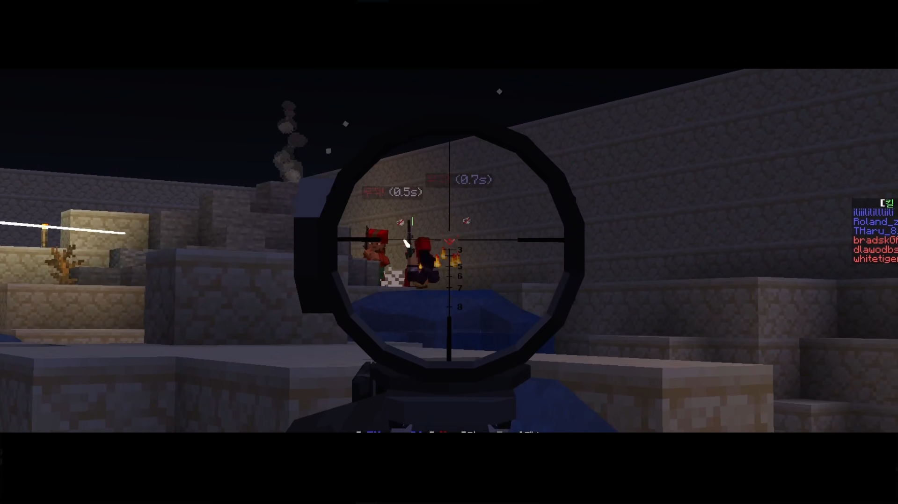

Minecraft
1.20.1
플레이 방식
PvP · FPS
지원 환경
Windows 10/11 64비트
접속 준비
전용 클라이언트 · 정품 계정
01 / 서버 소개
마인크래프트에서 즐기는 FPS
서버 주소
—
전용 클라이언트에서 시작하면 서버에 자동 접속합니다.
02 / 설치와 첫 접속
5단계로 시작하세요.
Windows PC와 정품 Minecraft 계정을 준비하세요. 클라이언트 다운로드 →
-
클라이언트 다운로드홈의 다운로드 버튼으로 Windows 설치 파일(.exe)을 받으세요. GitHub 페이지가 열리면 최신 릴리스의 Assets에서 .exe 파일을 선택하세요.Windows 전용
-
설치 파일 실행다운로드된 .exe 파일을 실행합니다. 설치에는 관리자 권한이 필요합니다. Windows의 권한 요청을 확인하고 설치 마법사의 안내에 따라 진행하세요.화면 안내대로 진행
-
설치 완료 확인시작 메뉴에서 Min. At. Zero. Client를 확인하세요. 바탕화면 바로가기는 설치 중 해당 옵션을 선택했을 때 생성됩니다.
-
정품 계정으로 로그인홈의 계정 관리자 버튼으로 클라이언트를 열고 정품 Microsoft / Minecraft 계정으로 로그인합니다. 정품 계정 없이는 게임 시작이 불가합니다.정품 계정 필수
-
홈에서 게임 시작홈의 게임 시작을 누르고 브라우저의 앱 열기 요청을 확인하세요. 클라이언트가 업데이트를 확인하며, 첫 실행에는 모드팩 다운로드와 설치로 시간이 걸릴 수 있습니다.사이트 런처 이용
03 / PC 사양
내 PC에서 플레이할 수 있나요?
- OS
- Win 10/11 64bit
- Win 10/11 64bit
- CPU
- i3-8100 / R3 3100
- i5-11400F / R5 5600
- RAM
- 8 GB
- 16 GB
- GPU
- UHD 630 / GT 1030
- GTX 1050Ti / RX 570
- STORAGE
- 2 GB 이상
04 / 자주 묻는 질문
궁금한 점을 확인하세요.
- Windows 전용 클라이언트를 먼저 설치하세요. 설치 프로그램이 matz-client:// 연결을 등록합니다. 브라우저의 앱 열기 요청을 확인하고, 이미 실행 중인 클라이언트가 있다면 종료한 뒤 다시 시도하세요. 연결이 등록되지 않았다면 설치 파일을 다시 실행하세요.
- 네. 초기화는 설정과 캐시뿐 아니라 게임 폴더 전체를 삭제하며, 그 안의 replay_recordings 폴더도 포함됩니다. 게임을 종료하고 리플레이 폴더 버튼으로 필요한 파일을 다른 위치에 백업한 뒤 진행하세요.
- 네, 반드시 필요합니다. 게임 시작 시 정품 계정으로 로그인이 되어 있지 않으면 게임이 시작되지 않습니다.
-
클라이언트를 설치하면 마인크래프트 시작 화면이 바뀌며, 시작하기 버튼을 누르면 자동으로 서버에 접속됩니다. IP를 직접 입력하고 싶다면 아래 주소를 사용하세요.
tharu81.kro.kr - 마인크래프트 자체는 Mac/Linux에서도 실행되지만, 전용 클라이언트가 현재 Windows만 지원합니다. Mac/Linux에서는 플레이가 불가합니다.
- 불가합니다. 서버 플레이에 필요한 모드팩은 전용 클라이언트를 통해서만 설치·다운로드할 수 있습니다. 또한 부정행위 방지를 위해 전용 클라이언트 외 접속은 허용되지 않습니다.
- 설치되는 모드팩에 다양한 최적화 모드가 이미 포함되어 있습니다. 그래도 성능이 낮다면 게임 내 그래픽 설정(렌더 거리, 그래픽 품질 등)을 낮춰 보시기를 권장합니다.
- 부정행위 방지를 위해 추가 모드 설치는 엄격히 금지되어 있습니다. 클라이언트는 설치된 모드에 대해 무결성 검사를 진행하므로 임의로 추가된 모드는 감지됩니다.
- 클라이언트 및 서버 관련 버그나 문제는 디스코드 @tharu_81로 문의해 주세요.
- 정기 점검은 따로 없습니다. 다만 치명적인 오류 발생 시 예고 없이 점검이 진행될 수 있습니다. 점검 공지는 디스코드에서 확인하세요.
05 / 이용 약관
접속 전 확인해 주세요.
서버에 접속하면 아래 이용 약관과 운영 정책에 동의한 것으로 간주합니다.
06 / 기술 정보
서버를 구성하는 것들
클라이언트가 필요한 모드팩을 설치합니다. 아래 목록은 참고용이며 추가 모드 설치는 허용되지 않습니다.
클라이언트와 개발 정보
서버 엔진 Arclight